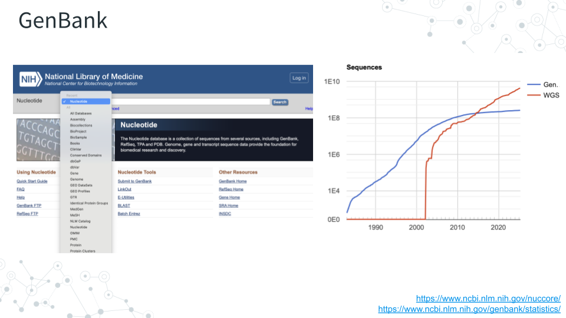

3.2 Prelab: Microbial Genomes
3.2.1 Purpose
Impress all the information that is freely available about well studied (and not so well studied) bacterial species. Start with E. coli as one of the best and longest studied before going into recently discovered bacteria (with less information).
3.2.2 Learning Objectives
- GenBank – Explore sequence database of publicly available DNA sequences.
- Sequence Browser – Observe genome organization using graphical representation.
- Bacterial database BV-BRC - Explore bacterial genes and their function.
- Taxonomy Browser – Identify relationships between taxa.
- Lifemap - Tree of Life viewer to visualize relationships between taxa.
3.2.3 Activity 1 – GenBank
Estimated time: 10 min

3.2.3.1 Instructions
- Navigate to GenBank https://www.ncbi.nlm.nih.gov/genbank and enter ‘E. coli strain K-12’ in the search bar (which should default to Nucleotide).
- E. coli strain K-12 is a laboratory strain commonly used in research. This will give you back a list of over 40,000 sequences.
- A famous substrain of E. coli strain K-12 is substrain MG1655. Let’s narrow down our search and in the search bar enter ‘Escherichia coli str. K-12 substr. MG1655’.
- This should give you a list of over 9,000 E. coli sequences.
- Let’s explore one specific version of the MG1655 substrain with NCBI Accession ID NZ_CP169634
- In the search bar enter ‘NZ_CP169634’.
- This should take you to this link here: https://www.ncbi.nlm.nih.gov/nuccore/NZ_CP169634.
- Based on this page, answer the following questions.
3.2.4 Activity 2 – Genomes, Genes, and Other Databases
3.2.4.2 Instructions
After entering Accession ID NZ_CP169634, on the right of the page under Related Information, click on the Assembly link to explore genome assembly information.
3.2.4.3 Questions
| 1. How many chromosomes does E. coli have? |
|---|
| 2. What is the genome coverage of this sequenced genome? |
|---|
| 3. How many genes were annotated for this genome? |
|---|
3.2.4.5 Instructions
Go back to https://www.ncbi.nlm.nih.gov/nuccore/NZ_CP169634 and near the top of the page, find and click on Graphics to explore the genome browser.
- Hover along one of many green vertical sticks
- Click the
+icon a few times to “Zoom In” to a genomic region for higher. resolution
- Click the
- Hover along one of many red vertical sticks
- Zoom in until you see a difference between the green and red sticks.
3.2.4.6 Questions
| 1. What do the ‘green sticks’ represent? |
|---|
| 2. What do the ‘red sticks’ represent? |
|---|
| 3. Record 5 genes you found present in E. coli. |
|---|
| Gene example: ampC |
| Gene 1 |
| Gene 2 |
| Gene 3 |
| Gene 4 |
| Gene 5 |
3.2.4.8 Instructions
To learn more about the genes of interest and their function scientists often use specialized databases. One such bacterial database is BV-BRC https://www.bv-brc.org. Use BV-BRC to find information about some of the E. coli genes.
For the 2 genes below and one gene of your choice from the activity above:
- Expand “Searches” in the top menu bar and select “Pathways”.
- Type the gene name into “Keyword” and press
<ENTER>. The resulting output may contain gene entries for many different bacterial genomes, and E. coli may be one of them. - Check one of the boxes corresponding to a specific Genome Name to learn more about your gene, and answer the following questions.
3.2.4.9 Questions
Note that some genes of interest will not be found in the BV-BRC database. Rather than reporting “No results found”, pick another gene.
| 1. For genes below pick an organism (Genome Name). | |
|---|---|
| Gene ID | Genome Name |
| Gene 1: ampC | Escherichia coli 07798 |
| Gene 2: mgtA | |
| Gene 3: Your gene |
| 2. For the 3 genes above, record gene Product / Description. | |
|---|---|
| Gene ID | Product / Description |
| Gene 1: ampC | Beta-lactamase |
| Gene 2: | |
| Gene 3: |
| 3. For the 3 genes above, record Pathway Name (relates to function). | |
|---|---|
| Gene ID | Pathway Name |
| Gene 1: ampC | beta-Lactam resistance |
| Gene 2: | |
| Gene 3: |
3.2.5 Activity 3 - Taxonomy and Tree of Life
Estimated time: 25 min
3.2.5.2 Instructions
- Go back to NCBI enter the E. coli accession number again https://www.ncbi.nlm.nih.gov/nuccore/NZ_CP169634.
- Under Related Information on the right, click on Taxonomy and then on the provided link for the E. coli.
- Find taxonomic lineage information labeled as “Lineage(full)”. Full lineage information contains seven core taxonomy ranks: Kingdom, Phylum, Class, Order, Family, Genus and Species, plus any additional classification ranks. To see which taxonomic rank a name refers to you can simply hover over the lineage name.
3.2.5.3 Questions
| 1. Record the seven core taxonomy ranks below. | |
|---|---|
| Kingdom: | |
| Phylum: | |
| Class: | |
| Order: | |
| Family: | |
| Genus: | |
| Species: |
| 2. Use any search engine to learn 2-3 facts about phylum Pseudomonadota. What did you learn? |
|---|
| Fact example: “Pseudomonadota” is also known as “Proteobacteria”. |
| Fact 1: |
| Fact 2: |
| Fact 3: |
3.2.5.5 Instructions
- As with the BV-BRC database above, we can use another database called Lifemap to visually explore E. coli in the context of the tree of life. Go to https://lifemap-ncbi.univ-lyon1.fr, click “Start Exploring”, click “Search a taxa” (magnifying glass icon) in the left hand menu, type “E. coli”, and click the “Species” results.
- On the tree map, the green dot and circle will indicate E. coli. Use plus and minus tabs to zoom in and out and visualize E. coli relative to other organisms on the map.
3.2.5.6 Questions
| 1. How many Domains of life are there? |
|---|
| 2. Zoom into and find nodes for the E. coli Genus, Family, Order, Class and Phylum. Do they match what you found in the NCBI Taxonomy Browser for Lineage? |
|---|
| 3. What are some other members of the Genus (Escherichia) to which E. coli belongs? |
|---|
| 4. What are some other members of the Family (Enterobacteriaceae) to which E. coli belongs? |
|---|
| 5. What are some other members of the Order (Enterobacterales) to which E. coli belongs? |
|---|
| 6. What are some other members of the Class (Gammaproteobacteria) to which E. coli belongs? |
|---|
| 7. What are some other members of the Phylum (Pseudomonadota) to which E. coli belongs? |
|---|